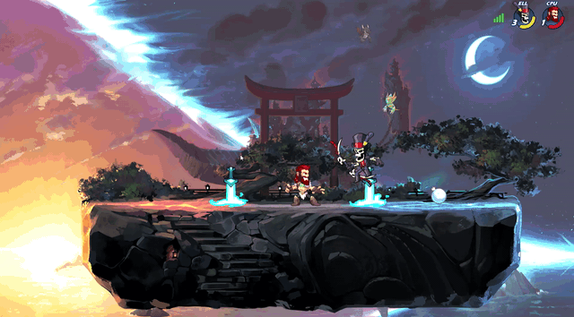
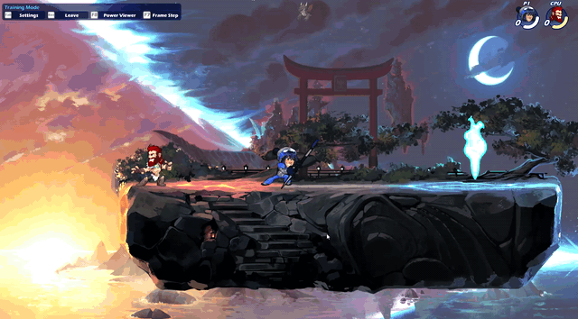

What is Brawlhalla?
Brawlhalla is a 2D fighting game where 2 (or more) players try to knock eachother off the platform. Brawlhalla has 49 legends so far. A legend is a character you can control in the game, for example, the legend on this page's banner is called bödvar, a half-man, half-bear.
Each legend has two weapons, with three signature moves per weapon. There are currently 12 weapons in the game: Axe, blasters, bow, cannon, gauntlets, hammer, orb, katars, lance, scythe, spear and sword; you can also fight unarmed. A signature move (or heavy attack) is an attack that is unique to a legend. These attacks often have fancy graphics, and are slow, yet powerful. Below is a down signature in action.

The three signatures on each weapon correspond to three directions: Side (left or right), down and up (known as neutral). Each weapon also has light attacks, these are not unique to a legend, but unique to the weapon, for example, if two legends have a hammer, they will have the same light attacks. There are three grounded light attacks, corresponding to the same directions as signatures: Side-light, neutral-light and down-light, but there are also the equivelant light attacks when the player is in the air; (side-air, neutral-air and down-air) these are often similar, but different to their grounded counterparts. Below is a comparison between a spear side-light and a spear side-air.

The overall goal is to get the player's health down, and knock them away. The lower a player's health is, the less resistant to attacks they are.
Each individual legend has their own written backstory. These backstories always end with valkaries inviting them to live in Valhalla. Valhalla is a mythical kingdom where people and creatures (legends) go to live the rest of their immortal days.
How can I get better at Brawlhalla?
A way to get better at the game is to practice combos and strings. these are normally a sequence of light moves strung together to get the opposing player's health down. Sometimes you can end a string or combo with a signature move, and as they deal alot more damage, this can sometimes finish your opponent. You have to be careful when using sigs, as they are slow, and easy to dodge or punish. Punishing is a technique where you can dodge out of a string or combo, and surprise them with an even heavier combo.
I like to play this game because of the satisfaction that you get when you win a game. When you put a lot of time, and practice into it, it can be very rewarding.